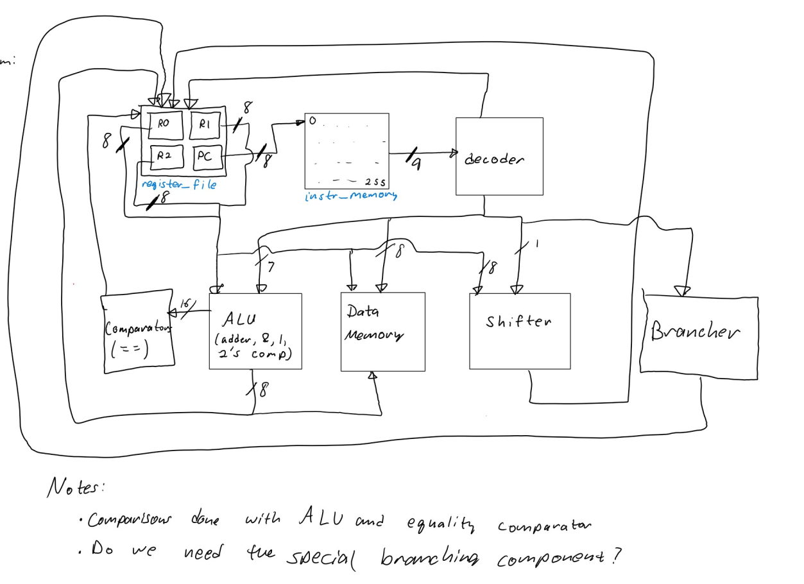
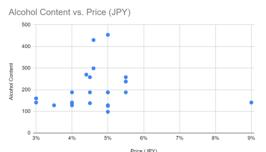
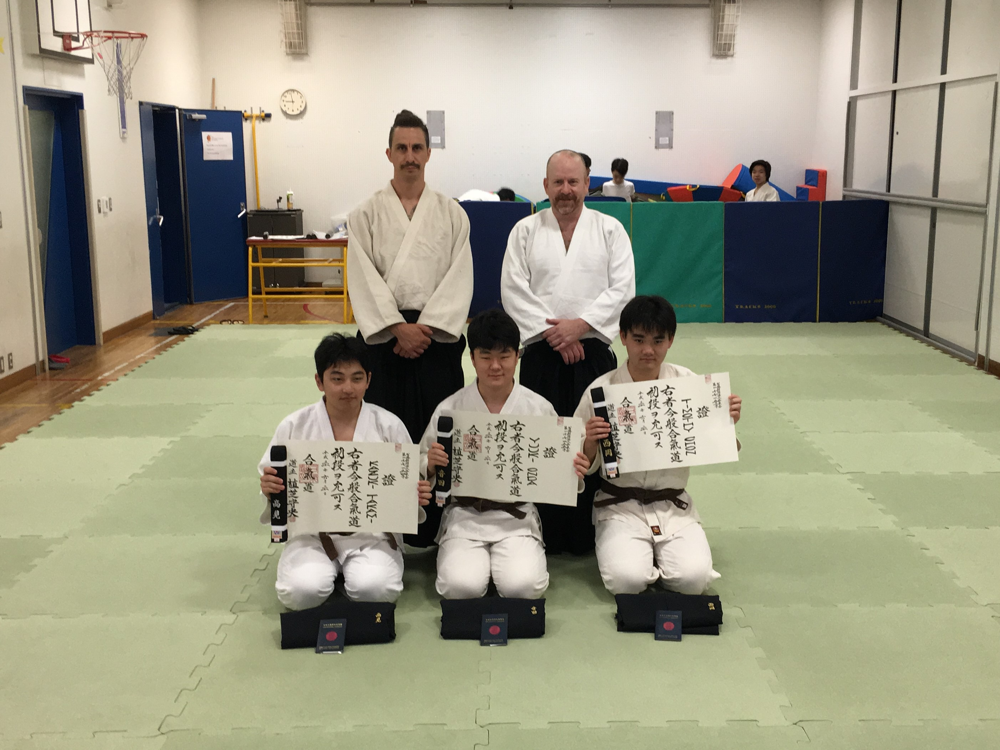
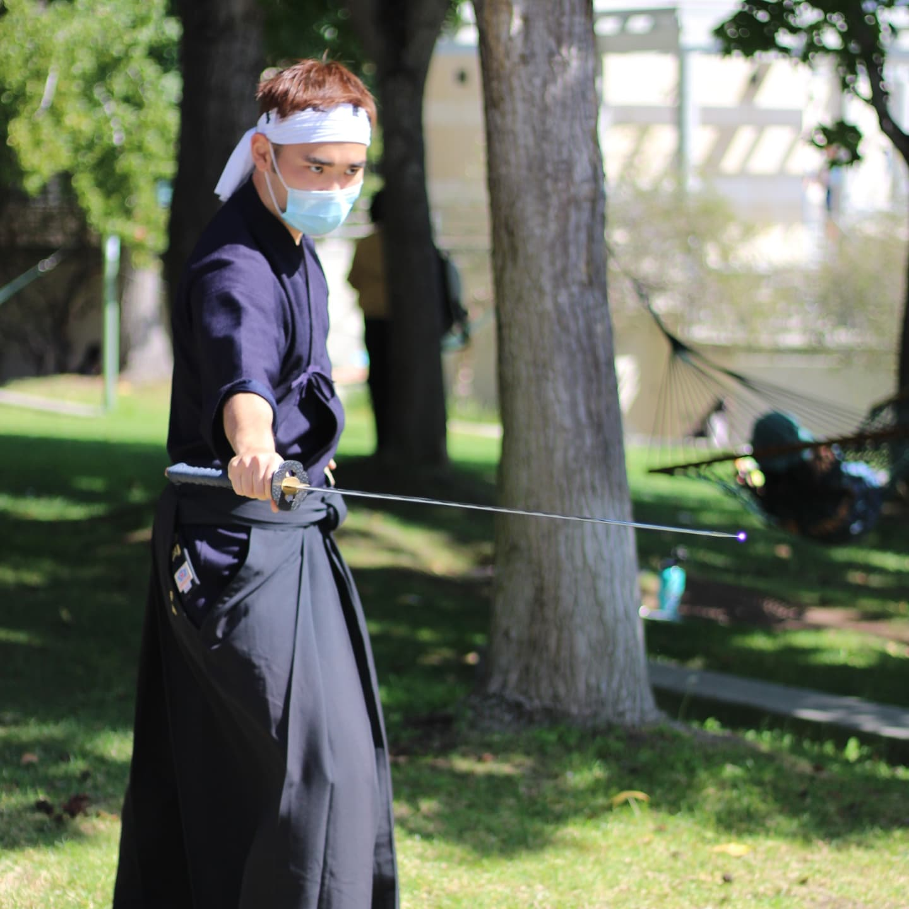

ようこそ！西岡ティモシー大輔と申します
アバウト
学歴
University of California, San Diego - 経済 B.A.
- メジャー GPA: 3.501
- 受賞日: 2022年12月
University of California, San Diego - コンピューターサイエンスアンドエンジニアリング B.S.
- メジャー GPA: 3.313
- 受賞日: 2022年12月
全体的なGPA: 3.328
- Microeconomics A, B, C
- Macroeconomics A, B
- Econometrics A, C
- Decisions Under Uncertainty
- Game Theory
- Industrial Organization
- Advanced Data Structures
- Algorithm Design and Analysis
- Software Engineering
- Principles of Computer Operating Systems
- Intro to Computer Security
- AI: Search and Reasoning
- Intro to Modern Cryptography
好きなクラスのリスト:
- Engineering Calculus A, B, C
- Discrete Mathematics
- Linear Algebra
- Microeconomics A, B, C
- Macroeconomics A, B
- Econometrics A, B, C
- Decisions Under Uncertainty
- Game Theory
- Industrial Organization
- Advanced Data Structures
- Theory of Computation
- Algorithm Design and Analysis
- Software Engineering
- Web Client Languages
- Intro to Computer Architecture
- Principles of Computer Operating Systems
- Programming Languages: Principles and Paradigms
- Intro to Computer Security
- Interaction Design
- AI: Search and Reasoning
- Intro to Modern Cryptography
- Recommender Systems and Web Mining
とった注目すべきクラスのリスト:
- Java - 4年
- C/C++ - 3年
- Python - 2年
- HTML/CSS/Javascript - 2 年
- ARM Assembbly - 2 年
- System Verilog - 1 年
プログラミング言語
- VIM
- Visual Studio Code
- バージョンコントロール - Git
- GDB + Valgrind
- JDB + JUnit
- Stata
ソフトウェアツール
- Java Standard
- JUnit
- C++ Standard
- Node.js
- Bootstrap
フレームワーク/ライブラリー
- アジャイル開発
- リーダーシップ
- コミュニケーション力: スピーチ、議論、チームワーク、交渉, 情報収集
- 学習が速い
その他のスキル
プロジェクト

Bujo Studio
SEの授業で７人と作ったジャーナリングアプリ。。。

3BC Processor
3人組でゼロから作ったカスタムプロセッサー。エラーコレクションとそのエラーの修正に特化したプロセッサーでした。。。

日本ビール研究
Industrial Organizationの授業で研究した日本のビール企業の仕組みの結果。。。

2021年UCSD 剣道部大会
剣道部の部長だった間に企画した大会。。。
実績
武道
日本の武道は私の発展とアイデンティティーに重大な影響があります。子供の頃の合気道の稽古からUC San Diegoの剣道と居合道部の部長としてリーダーシップを取るまで 私はどんなに忙しくても武道化として、主に人間として成長する時間を尽くしています。以下の実績はその一生懸命に得た人間としての成長の成果とも言えます。
全日本合気道会 - 初段
- 受賞日: 2018年4月
南カリフォルニア剣道会 - 三級
- 受賞日: 2022年4月
Mazuru Kai Iaido Dojo - 5th Kyu Rank
- Awarded: May 2022
2021年 UCSD 剣道部大会 - 上級者部1位
- 部員と一緒にUCSDの剣道部の出来て25年の始めての大会を開催しました。30人程の良い参加率がいて勝ってしまいまた。
- 受賞日: 2021年11月
2022年サンディエゴ剣道部大会 - 山本カップ2位
- この大会はUCSDの剣道部に繋がっている道場が毎年John K. Yamamoto先生の記念に開催している大会です.
- 受賞日: 2022年3月
2022年 UCLA yuhihai tournament - 級者団体戦2位
- これは毎年UCLAが開催する名誉ある大会でアメリカ全国の大学剣道部が参加する大会です.
- 受賞日: 2022年4月
UCSD 剣道部‐部長
- 部員だった四年間の間で秘書から副部長、部長まで上がりました。
- 合計10人の管理委員会で私たちは以下を達成しました:
- コロナ禍からの深刻な停滞の後、年の始まりでは15人の部員から80人まで拡張
- 道場内での正しい礼儀を教え、部員が怪我しないように準備体操をリード
- 部の30年の歴史での始めての大会を開催 
- UCSD内の他の部活やクラブと組んで剣道、又は私たちの部活を紹介するデモを開催
- 部のコミュニティーを強化するために稽古以外のイベントやソーシャルを企画
- 新しい部員の参入障壁を出来るだけ竹刀と防具の価格を武道具の店と交渉
- 部員限定のジャケットやT-シャツをデザインし販売。勿論利益は大会とかソーシャルとかに入れた。
- 他所の大会費の補助金を参加する部員に出せる為に募金活動を企画
- 部員、後輩の悩み相談や指導
- 任期: 2021年6月 - 2022年6月
UCSD 居合道部‐部長
- 唯一の部員から部長になった私は以下を達成しました:
- 部のメンバーを私だけから15人まで拡張。コロナ禍の後、居合道部は潰れる所でした。
- 部員3人を管理委員会にレクルート。
- 部員一人一人の武道具費の補助金を出す為に募金活動を企画。
- 二度と部員一人だけの状況にならないように剣道部を管理していて習ったベストプラクティスをガイドライン化。
- 任期: 2020年6月 - 2022年6月
スピーチと議論
私も含めて多くの人は人前でスピーチをするのは死よりも恐ろしい恐怖と言われます。だがしかしもっと強い人間に成長する為に私はその恐怖を克服し、コミュニケーション力を身に着けました。
Close to the Coast Novice Division - ３位
- 最初で最後の大学レベルで参加した議論の大会. 議論は私が未経験のIPDA式で企画されていましたが大会中に学び3位に入賞しました。結果としてその頃誕生したばかりの議論部の評判に貢献しました。
- 受賞: 2019年1月
Kanto Plains Varsity Debate Tournament - 1位
- 関東地方のインターの高校の中で毎年開催される議論の大会です。私の高校含めて何件かの学校が毎週この大会の準備で練習議論をやっていました。この大会はExtended Mace式でした。
- 受賞: 2016年2月、2018年2月
連絡


 クリップボードにtchon@ucsd.edu をコピー
クリップボードにtchon@ucsd.edu をコピー
 +1-858-752-2709
+1-858-752-2709